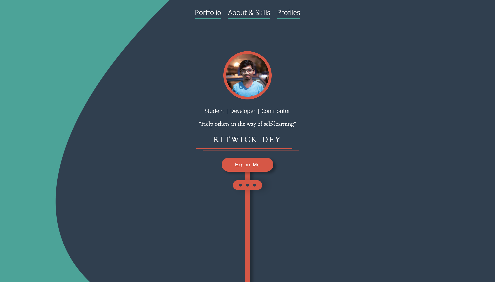

Ritwickdey

When I first came into contact with interactive web pages, I would rather pay attention to
the visual perception of whether the web page is clear and concise. Whether the interactive functions
contained in the web page are complete, and whether these interactions can work.
When I opened this interactive page, I saw a picture that made me feel comfortable and concise.
I first experienced the various functions of this webpage interaction and thought about the advantages and
disadvantages of the following question and the corresponding interactive website.
I spent the longest time on this interactive page in the contact and profiles section because I needed to open and understand many external links in this section.
My most common action is clicking a text button. Because the most interactive function of this interactive website is to connect and convert pages, the picture is much more precise.
My goal for the interactive experience is to have a full and clear feeling about the screen of the page and the interactive functions. The content of this interactive website needs to be clearly and concisely expressed, and the picture is not expected to be cluttered.
This interactive web page mainly uses hyperlinks and button clicks to send the next step and discover a new page. Most of the text is put to good use and made into buttons. External links are also displayed with logo buttons. When I experience it, I will have a good sense of experience.
After a period of experience, I have mastered the interactive functions of this interactive webpage. I'm constantly pressing buttons and going back and opening a new link. I lasted 20-30 minutes and pressed the button several times.
After some time, I have a thorough understanding of the interactive experience. The interactive web requires various ways and effects to interact with users to have a good sense of experience when participating. And each link or function needs to work well..
Among the media forms referenced on this webpage, the most used are buttons and image flipping.
This media form is very convenient and straightforward for people to use. When we browse this website, we only need to move the mouse to the desired screen, click or hold to see more content, and it will not be too complicated.
First felt an effortless operation for these media forms, most of which are text guides, which is very suitable for those just starting to use web pages. You can participate in more interactive sessions if you want the interactive webpage to be more prosperous and operable. Can give some guidelines or some show photos or videos.
The most frustrating element for me in the interaction is that most of the web page's content is text. There are not too many pictures, and the pictures will give people more and more intuitive feelings. When opening each new screen step by step, I will see more text and feel frustrated.
Contrary to the previous question, the element that satisfies me the most is this interactive web page's simple and clear picture, which makes people very comfortable. When I first opened this interactive website, the colors, and typography at first glance made me very comfortable, can know the content of this web page instantly.